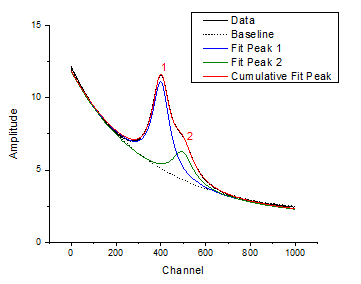

FAQ-300 ピークデコンボーリューションを実行するにはどのようにしたら良いでしょうか？
peak-deconvolution
最終更新日:2015/02/04
強度が個々の要素の一次結合のとき、ピークデコンボリューションを行うためにカーブフィットを適用することができます。Originは、重なり合ったピークを含む複数のピークのフィットのために2つのツールを用意しています。
- 複雑なベースラインがない場合、複数ピークフィットツールを使用できます。このツールは、メインメニューの解析：ピークと基線：複数ピークフィットを選択して実行します。ピークの場所をクリックして指定し、指定されたピーク中心をベースにしたピークフィットを実行します。このツールでは、OriginのNLFitダイアログボックスを開いて詳細の設定を行うことができます。
- 複雑なベースラインがある 場合、ピークアナライザーツールを使用できます。これは、メインメニューから解析：ピークと基線：ピークアナライザーと選択して使用します。処理をピークフィット(Pro)にセットします（この機能はOriginProでのみ使用できます）。このツールでは、ベースラインやピークを検索するための様々な手法を使用でき、すべてのフィットプロセスをコントロールできます。各ピークで異なるフィット関数でフィットするには、このウィザードの最終ページの下部にあるフィット制御ボタンをクリックします。

キーワード: ピーク, ピークフィット, デコンボリューション, 分離, 重ね合わせ